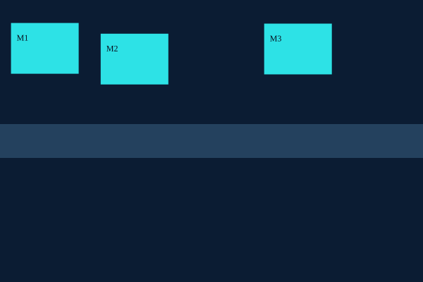

Layouts industriais generativos
Geração adversarial de layouts com validação geométrica.

Resumo do projeto
Objetivo e valor para o negócio
Gerar propostas de posicionamento de equipamentos em um espaço industrial, respeitando limites, corredores e ausência de sobreposição. O objetivo de negócio é explorar alternativas de layout antes de uma avaliação técnica detalhada.
Como funciona, em linguagem simples
O experimento aprende com layouts sintéticos de três equipamentos. O gerador propõe coordenadas e o discriminador tenta distinguir exemplos de referência de propostas geradas. Um verificador geométrico independente avalia as propostas, que podem ser visualizadas em SVG.
Entenda os itens técnicos
GAN é o treinamento competitivo entre gerador e discriminador. A versão condicional recebe informações que orientam a geração. Penalidades geométricas desestimulam soluções inválidas; o verificador confirma limites, corredor e sobreposição. A implementação atual gera coordenadas, e uma CNN para imagens de layout é uma evolução futura.
Como explicar ao entrevistador
Desenvolvi uma GAN condicional para propor layouts industriais em um cenário sintético pequeno. Separei a geração da verificação geométrica para avaliar as restrições de forma independente e comparei a viabilidade com um baseline aleatório. O protótipo demonstra geração adversarial e validação de restrições, mas ainda não comprova diversidade suficiente nem conformidade normativa.
O que mostrar e como ler os resultados
Mostre o layout SVG e a taxa de propostas viáveis no relatório. Explique quais regras o verificador cobre. Uma alta viabilidade não garante layouts variados, produtividade industrial ou atendimento a normas de segurança.
O que significam as próximas etapas
Os próximos passos são avaliar diversidade, ampliar os cenários e usar um solver para corrigir propostas. Exportação DXF, integração CAD e regras validadas por especialistas ainda são evoluções planejadas.
Como usar “Reproduza o experimento”
O primeiro comando instala o projeto e suas dependências no ambiente Python. O segundo executa a demonstração e gera os resultados. O terceiro executa os testes automatizados. Para apresentar, mostre o problema, rode a demonstração e interprete os resultados; os testes verificam comportamentos específicos e não comprovam desempenho em produção.
Estudo independente com dados sintéticos, inspirado em experiências setoriais do autor. Não representa entrega ou endosso de clientes. Métricas desta execução não demonstram desempenho em produção.
Problema e contexto
Geração adversarial de layouts com validação geométrica.
MarcopoloImplementação atual
GAN condicional para coordenadas de três equipamentos; treino gerador/discriminador com penalidades geométricas e condicionais; dados sintéticos; verificador independente de limites, corredor e sobreposição; baseline aleatório; exportação SVG.
Próximas etapas
Treinamento com mais dados e múltiplas sementes; diversidade e cobertura; geração raster com CNN; correção por solver; DXF e integração Autodesk; restrições validadas por especialista.
Reproduza o experimento
python -m pip install -e .
python -m layoutgan.demo
python -m unittest discover -s tests -vLayout da execução

generated
Resultados e limites
Relatório da execução registrada. Consulte os parâmetros e os resultados negativos antes de interpretar as métricas.
Ver relatório completo
{
"synthetic": true,
"seed": 7,
"steps": 600,
"losses": {
"generator_loss": 0.6993192434310913,
"discriminator_loss": 1.3730731010437012
},
"gan_feasible_rate": 1.0,
"random_feasible_rate": 0.19,
"mean_coordinate_std": 0.013472230173647404,
"svg_source": "generated",
"limitations": "Short training; feasibility is not guaranteed; condition fidelity not yet evaluated."
}